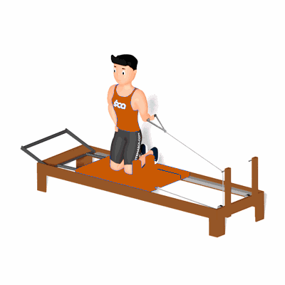

Unilateral Shoulder Press with Inclination

O exercício trabalha o alongamento e fortalecimento dos músculos do ombro, tríceps e abdômen.
Ficha Técnica
Tipo: Pilates
Grupo Muscular: Ombro
Aparelho: Nenhum
Músculos: Nenhum
Como realizar
- De joelhos, de lado para a barra de pés, segure uma das alças de mão, mantendo o braço junto ao corpo, o cotovelo flexionado em 90° e a mão em supinação;
- Realize a extensão do ombro ao mesmo tempo em que estende o cotovelo e inclina lateralmente o tronco para o lado oposto ao da alça de mãos, mantendo a posição das pernas;
- Retorne a posição inicial.
 RC STORE
RC STORE